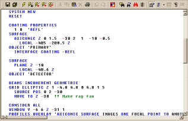
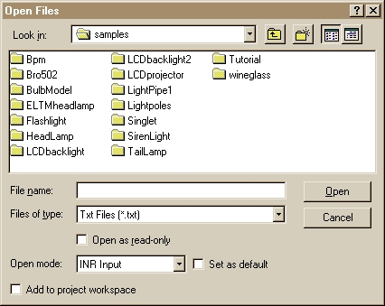

The ASAP Editor supports basic text operations, such as editing
script (*.inr, *.txt) files, cutting and pasting, as well as a broad set of
features to support creation of command scripts. When an Editor file is run,
the commands are sent to the ASAP kernel.

Note: If you choose to use a different editor than the one provided in
ASAP, you will need to open the text file in ASAP.and run it.
Editor User Assistance with the smartEditor
The Editor includes an embedded user-assistant called the smartEditor
to assist you with creating scripts. The smartEditor includes two tools:
Command Tips, a quick way to request command syntax for any ASAP command, and a
tool for finding the correct spelling of an ASAP command.
Mini Builder
You can take advantage of the quick scripting of the ASAP Builder
while working in the Editor to create your geometry. To open the Mini Builder
in an Editor window, select the
View menu and click
Mini Builder, or click the
Mini Builder button on the Editor toolbar, or press the F9 key.
A one-line Builder window opens at the bottom of the Editor window.
Double-click the cell in the
Type column and select the commands you want from the drop-down
menu. To move the script from the Mini Builder to the Editor, copy and paste
it, or drag and drop it in the Editor window.
Scripting Language Support
From within the ASAP Editor, you can select a scripting language other
than ASAP, such as JScript and VBScript, among others. If you change the
scripting language, you will need to add the letter
k before an ASAP command; for example, the command
ARRAY become
kARRAY. From the Editor Window Toolbar you can select from a
list of supported languages. The syntax required for these languages is listed
in Scripting Language Syntax (Non-INR), along with examples.
Keyword Editor
You can create your own keywords of abbreviated command names with the
Keyword Editor. This tool is accessible from the
Editor menu when the Editor window is active. After you create a
keyword, the Editor treats it the same way as keywords for ASAP commands,
applying color coding and making the Command Tips available with the
smartEditor.
Tolerancing
The ASAP Editor also supports tolerancing via a user interface within
the Editor.
Quick Start toolbar
Use the Quick Start toolbar on the ASAP main window to drag and drop
glasses, scatter and roughness models, lenses, example scripts, and interactive
scripts.
Opening a New Window
To open a new (blank) ASAP Editor
Input window, you can select
New from the
File menu, or click the
New button on the main menu toolbar. The window is named
ASAP - [Input #], until you save the file you create and assign
a unique name.
Opening an Existing File
To open an existing script file (*.inr) in the Editor Input window,
select
Open from the
File menu, and browse to the directory where the file is stored.

The
Open File dialog box includes three user settings for faster
file location.
- Select the type of file
you want to open from the drop-down list box, next to
Files of type. To select an ASAP Editor file, select
Input Files (*.inr).
- Set
Open mode to
INR Input from the drop-down list box. If you want this mode
to be the default, click the check box next to
Set as Default.
- Click
Add to project workspace if you want the selected file to
become part of your file list in
ASAP Workspace.
Note:
If you receive the error message, "Failed to open document", click
OK. When the message, "Unrecognized file type", displays,
click
Yes. To prevent this message from recurring, follow step 2
above.
Accessing Help from the Editor with F1
Highlight a command in the Editor window and press
F1 to open the associated Help topic or Help index.
Opening and Closing Editor Windows
You can create or eliminate Editor windows as needed. For example,
open one window for the system geometry, another window for ray initialization
and trace commands, and a third for analysis of the ray data. You can switch
from window to window, make the appropriate changes, and re-run the input until
the analysis is done.
The Editor window contains a menu bar at the top. When your mouse
points to a button on the Editor window button bar, the status bar at the
bottom of the main window indicates the function of that button.
Feature Set in the Editor
The Editor supports a wide range of features, all of which are
available without any extra programming after the control is created:
- Color Syntax
Highlighting. Language-specific keywords, comments, and strings are colored
differently to set them apart from plain text.
- Fully Customizable
Keyboard Mappings. Keystrokes can be added and removed to emulate popular
keyboard mappings, like Brief and Epsilon.
- Keystroke Macros.
Record a series of keystrokes and assign a keystroke to play back the
keystrokes repeatedly. Up to 10 macros may be recorded.
- Drag and Drop Text
Manipulation. Highlighted text can be dragged and dropped between any
window supporting OLE text Drag and Drop. Text may be copied or moved.
- Multiple Split
Views. Create up to four separate views of the same edit buffer. Each view
can be scrolled independently.
- Unlimited
Undo/Redo. All edit actions can be fully undone and redone. A limit can be
set on the number of edit actions that may be undone.
- Auto Indentation.
Once a language is chosen, as the user enters code, the Editor will
automatically indent lines to follow the scoping rules of the language.
- File Support.
Saving, Loading, and Inserting of files is easily achieved by sending a single
message to an Editor window.
- Clipboard Support.
Text can be cut, copied and pasted onto the Clipboard using the right-click
menu or a keystroke.
- Support for C/C++,
Java, SQL, Pascal, and Basic. An Editor control is already aware of five of
the most popular languages, without any additional programming required.
- Support for Custom
Languages. If the Editor does not support a specific language, you can
register a language by sending a single message. Once registered, all
language-related features are fully functional with the new language.
- Column Selection and
Manipulation. Columns of text can be selected with the mouse and then
manipulated. Empty columns (columns with a width of zero characters) can be
selected, causing subsequent typing and deletion to occur over multiple lines
at the same time.
- Custom Color
Settings. All foreground and background colors used in an Editor control
can be configured with a single Editor message. Configure colors in the window
properties dialog.
- Built-In Window
Properties Dialog. Most properties, including keyboard assignments, colors,
current language, and tab settings, are available to the user in a tabbed
dialog available from the built-in right-click menu or a keystroke (Alt+Enter).
This dialog can be easily disabled and/or overridden by the parent window.
- Context-Sensitive
Menu. A set of commonly used commands is available from a default
right-click menu. The menu can be easily disabled and/or overridden by the
parent window.
- Microsoft IntelliMouse
Support. Scrolling, word selection, and line selection is easily
accomplished with the Microsoft IntelliMouse.
- Over 120 Separate Edit
Commands. More than 120 separate edit commands can be assigned to a
keystroke and invoked by the user.